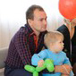

Отзывы

Александр
Иванов
Привет! Я участник 7 сезона! На проекте я испытал море эмоций всех модальностей! Это незабываемо! Я посещал множество психологических тренингов, но нигде не испытал такого очищения! Я рыдал навзрыд и смеялся от души! В процессе проекта я переоценил отношение к своим близким и своей жизни. Стал ставить цели на каждый день и достигать их! Я нашел 8 прекрасных, совершенно не похожих друг на друга людей, которые за 5 дней стали для меня близкими! Я за Проект "Шанс" , т.к. это прекрасная возможность раскрыть свой потенциал и достигать своей цели!
Юлия
Люкшина
Привет всем! Я участница 7 сезона проекта Шанс. Сказать , что я в восторге, значит ничего не сказать!! Внутри меня буря положительных эмоций, которые переполняют меня!! Это круче чем прыжок с парашюта! Проект изменил мое отношение к жизни, к людям, к времени и ко всему кто и что меня окружает!!! Я ценю свое время и знаю ему цену, я больше ничего не откладываю на потом. Я делаю все "Здесь и сейчас" и сказать что это КРУТО, значит ничего не сказать!!! Спасибо моей команде за время проведенное на проекте, я уверена что невидимая нить связала нас связала, ведь "Шанс" - это навсегда!!!!
Наталья
Прыкина
Всем привет!!!Я участница проекта ШАНС№1(31.10-12.12.2013). Сразу хочу сказать, я получила от проекта все, за чем шла: море эмоций, дозу адреналина, невероятный кайф и...........многое, многое другое. Забей на все проблемы и смело иди к своим желаниям!!! Поверь будет ооочень круто)))
Алёна
Штейнер
Проект серьезный, миссия поддержать человека в достижении его целей. здесь и тайм-менеджмент, и командообразование, и прощение, и движение вперед. Я для себя взяла несколько инструментов для быстрого и качественного результата. Буду рада поддержать и тебя!
Залия
Исакаева
Привет! тоже хочу поделиться своими ощущениями. Проект Шанс №1 - это отличный проект, можно сказать экспресс-курсы на тему "Как все-таки достичь свою ЦЕЛЬ". Простые, доступные пониманию действия, очень результативные методы. Теперь я могу достичь то, что казалось не достигаемым. Очень рекомендую всем прочувствовать на себе - не пожалеете. Отдельное спасибо тренеру и его помощникам.
Анастасия
Беликова
День добрый! Проект ШАНС №1 (31.10.13-12.12.2013) это своего рода школа жизни, где за очень короткий срок, ты увидишь, какой может быть твоя жизнь, и на что ты в ней способен, я шла не раздумывая, море уроков которые я приняла для себя останутся со мной навсегда, главные из них это делать, время-деньги, сильная команда- залог успеха, моя команда меня постоянно поддерживает- спасибо им за это!
Анастасия
Петухова
Доброго времени суток! Проект ШАНС №1 (31.10 - 12.12 13) перевернул мою жизнь, на сколько бы громко это не звучало... Я пришла просто от скуки, в итоге приобрела новые навыки для жизни, которые теперь помогают мне создавать свою жизнь по-другому. Получила поддержку от большого количества людей, поддержку, о которой я даже не мечтала. Теперь я с уверенностью могу сказать, что Я СЧАСТЛИВЫЙ ЧЕЛОВЕК, счастье которого приумножается каждый день.
Елена
Киланова
Шанс 1, с 31.10 по 12.12.2013 Привет, ребята! Хотите рвануть вверх и не в одиночку, а с командой! А потом делать это еще и еще! Тогда вы попали по адресу. Круто, своевременно и просто классно!
Наташа
Ашатан
ПРИВЕТ ВСЕМ!!! Долго думала что написать, чем поделиться и ....придумала!!! ЛУЧШЕ ОДИН РАЗ УВИДЕТЬ И ПОУЧАСТВОВАТЬ, ЧЕМ СТО РАЗ ПОСЛУШАТЬ И ПОЧИТАТЬ!!!! Да, еще ПРИЗ - 100 000 рублей !!!!!!!!!!!!!!!!!!!!!!
Марина
Бусова
Добрый день! всем !!! Участница " ШАНС № 1" Первый сезон (31.10-12.12.2013) Проэкт шанс изменил мою жизнь, участвуйте в проэкте "Шанс" !!! Почувствуйте вкус к жизни, проснитесь новым человеком!!! У вас откроется второе дыхание. появиться неимоверная энергия!!! прилив жизненных сил!!! бодрости.. Здесь вы ощутите то. чего никогда не ощущали. Научитесь ставить перед собой яркие и глобальные цели!!! и также достигать их за короткое время. Человек - вот именно здесь вы себя ощутите именно человеком с большой буквы. Вы поймете что такое поддержка ваших друзей, и как она может быть необходима в различных жизненных ситуациях. Проэкт дает возможность - выиграть денежный приз, а также много других знаменательных подарков от спонсоров.
Светлана
Алейник
2 сезон (5.12.13-9.12.13) Начнем..... Первый день да и собственно второй показались мне адом.....кто эти люди-они пришли сюда своими ногами? Зачем? Для чего? -для чего пришла я? -заставили!!! Первый, второй день ада.....третий.....и тут становится интересно.....понеслась душа в рай вместе с командой наших бойцов!))) Теперь моя команда знает то что не знал ни кто!!! Спасибо им огромное за терпение. Проект помог мне в большей степени как огромная поддержка морально. Команда это СИЛА!!! Могу сказать: тянуть кота за яй*а мое любимое дело.....как прижмет так и возьмусь за дело.....! Спасибо огромное "МАЭСТРО"!!! Ты вытащил из меня то что сидело во мне 6 лет и то что мешало мне двигаться дальше показывая людям что можно жить лучше чем шаблонное общество. Может это и была моя настоящая тайная зашифрованная цель моей души..... !!! После хочется сказать человеческое спасибо человеку который отослал меня в проект.....спасибо Наталья Олеговна!!! Мечта была.....теперь это стало целью!!! Поднять свою пятую точку со стула оказалось легко особенно с командой!) Сходить еще раз только за радость НО проект "ШАНС" только один раз в жизни!) Делай все на 100%! Отдельное спасибо 1 сезону за такую сильную и теплую поддержку!!!
Юлия
Конюхова
Я участница проекта ШАНС № 2 (05.12.13 - 09.12.13) Великолепный проект !!!! Колоссальные результаты !Только здесь понимаешь ,что невозможное возможно !!!!За один день можно успеть очень много,я наладила отношения с близкими людьми,сделала все на что раньше "не хватало " времени ,занялась тем ,о чем раньше просто мечтала ,сейчас у меня есть все чтобы быть счастливой и я счастлива!!!
Вероника
Князькина
Привет! Я участница второго сезона (05.12.2013-09.12.2013) проекта "Шанс". Я по натуре своей реалист и достаточно убежденный скептик, и именно по этой причине пребывание на проекте первые дни для меня было довольно тяжким. Ведь когда начинают давить на твои принципы, установки и стереотипы возникает определенный дискомфорт и сопротивление процессу.Скажу сразу,что своих целей я доБИВалась и раньше, но каким образом? Измучившись вопросом "КАК?!?!", прилагала максимум усилий, выматывалась морально и доБИВалась результата. Но почему-то он не особо радовал... Может, по тому что ты уже устал, пока доБИВался...Теперь я доСТИГаю целей по-другому!) Но, пожалуй,даже не этот бесценный урок для меня главный.Пребывая на проекте, я по иным взглядом посмотрела на многие вещи. На время, потраченное впустую. На прощение, которое так тяжело мне даётся.На взаимоотношения с родными и близкими, которые стали клубком скандалов и ссор. На заботу,которой так мало. На поддержку,которой нет. На результаты в моей жизни, которых я доБИЛась неимоверным трудом... И на многие другие. И, знаете, уже сейчас в моей жизни есть положительные изменения и результаты! Ведь... ВСЁ ПРОСТО! ВСЁ ОЧЕНЬ ПРОСТО! ШАНС ЕСТЬ У КАЖДОГО! Спасибо огромное нашему тренеру за бесценные уроки, моей команде за поддержку и моему директору за толчок!)
Настёна
Кузнецова
Я участница проекта "Шанс" 2 сезона (5.12.2013-9.12.2013).Хотелось бы поделиться своими эмоциями).первый день на проекте мне показался каторгой,день очень тянулся.Во второй день как то интересно стало...а что было в третий это вообще незабываемо)Мы привыкли жить не торопясь и откладывать все на потом...На проекте я поняла что возможно за короткий промежуток времени достигать больших результатов и это все не так сложно,как казалось на первый взгляд. И сколько я времени теряла впустую. Никогда не думала что совсем не знакомые мне люди могут оказать такую сильнейшую поддержку.Спасибо им большое.Проект очень эмоциональный.С каждым днем мы раскрывались все больше и больше.В общем я довольна,что оказалась в проекте и что со мной была именно эта команда!Не описать всех тех эмоций,нужно все прочувствовать на себе!Это интересно!
Ольга
Колесникова
Я участница проекта"Шанс-2" Еще совсем недавно я перенесла тяжелую операцию, и мне нельзя было три месяца сидеть и стоять-только лежать! Я обросла ленью и тишиной.Мне казалось -жизнь кончилась-я инвалид!Ни мечты,ни желаний!...И вот я на проекте...Мечта,такая недосягаемая!У меня весь комод забит кассетами о зоопарке,с 1995года и по2013.Я не владею компьютером,даже ссылку создать не умею,не могу друзьям послать фото,и вдруг научилась писать фильмы,накладывать музыку,резать и создавать!!! Эх,если бы раньше!!! Столько кассет размагнитилось и пропала ценная,для меня,информация!Как же я рада,что попала на этот проект и сделала то,что хотела,но все не хватало времени! Теперь я знаю,что такое- успеть и опоздать!!!
 Евгения
Евгения
Припутина
Всем привет!)) Я участница 5 сезона проекта "Шанс"! Хочу выразить огромную благодарность организаторам проекта! Лично Тренеру!) Спасибо большое, ваш вклад в меня неоценим! Это просто МЕГААФИГЕННЫЙ проект!) я советую даже не задумываться, идти вперед и не упускать свой шанс! Просто фонтан эмоций и лично мне просто жить захотелось с новой силой!) Иди на "ШАнс" без размышлений и ты полетишь!!!))))))
Александр
Речкалов
Всем привет!!! Я участник 4 сезона проекта Шанс))) Это наверно самое запоминающее что происходило со мной за всю мою жизнь, хотя не сказать что прям такой домашний! Я испытал бурю эмоций, прочувствовал, что же это на самом деле командная игра! И первый раз наверно трезво взглянул на мир и на окружение вокруг себя! И если ты сейчас думаешь идти ли тебе на этот проект - точно ИДИ! Узнаешь себе цену! Будут вопросы пиши расскажу о своих эмоция более подробно, которые я испытал! Удачи тебе! Не упусти свой Шанс!
Юлия
Беляцкая
Всем привет Если ты находишься в этой группе то значит ты уже на верном пути к изменению своей жизни Я участница проекта Шанс 3 Сезон я должна была стать еще участницей первых сезонов но видать вселенная решила что мне нужны именно те люди с которыми я оказалась именно в этом сезоне Моя команда моя самая лучшая команда многому меня научила каждый дал мне частичку чего то нового а главное это те эмоции безумные эмоции которые я испытала на многие вещи которые казались раньше банальными а какие то и вовсе я не замечала я посмотрела по новому в общем если вы считаете что ваша жизнь вас не устраивает не можете найти выход да и просто вам не хватает чего то яркого идите обязательно идите P S кстати так к слову с грамматикой у меня нет проблем а то почему я написала все без знаков препинания вы поймете позже Удачи рискуйте творите любите Вселенная тебе отдельное СПАСИБО
Олег
Маркунасов
Всем привет!))) Я участник 4 сезона "ШАНС". Могу теперь с 100% уверенностью сказать, что это МЕГАКРУТОЙ проект!!! ТАКИХ эмоций я никогда не испытывал!!! Я автор своей жизни и это мой выбор жить в ж..пе или жить прекрасной 100% жизнью с реальными результатами. Друзья, это проект подойдет для всех. А если вдруг ты до сих пор не знаешь, что хочешь от жизни, не можешь разобраться в себе или отношениях с родителями, любимыми.... или просто хочешь провести время с 100% клевым результатом - это твой ШАНС! Еще могу сказать, что я двигался так, что делал на "отшибись", так она моя жизнь и строилась. Сейчас я делаю, делаю и делаю... У меня образовалось куча целей. Я не знаю как я это сделаю, и я это сделаю)_))))
Таня
Нифонтова
Привет))) Я участница 4 сезона "ШАНС" Я очень благодарна всем кто поучаствовал и подтолкнул меня на прохождение данного проекта!!! Не реально классный проект, на 100% Получила массу ярких эмоций, восторга, открыла себя с новой стороны, оглянулась назад, и посмотрев на свои ошибки усиленно начала работать над собой!!! На проекте встретила самых добрых, отзывчивых людей, посмотрела на мир новыми широко открытыми глазами!!!Моя команда лучшая!!!! Спасибо тренеру самому лучшему который отдавался на все 100% не сдавался))) Моя жизнь изменилась кардинально, и если ты хочешь добиться результата - это твой ШАНС!!! Я СЧАСТЛИВА!!!
Вадим
Куликов
Всем привет Я участник 4 сезона "ШАНС" Чтобы меня кто то чему то учил? Да я и сам кого хочешь могу научить. Именно эта позиция не давала мне роста во всех смыслах этого слова. На проекте я увидел все те свои стороны которые не видел раньше, хотя и без того постоянно развиваюсь, где то я улучшил себя, где то кое что убрал, ведь никогда нет придела совершенству. Я получил ответы на множество вопросов в своей жизни, раскрыл свои эмоции, в общем решил все проблемы в своей жизни, каждому советую пройти чтото подобное особенно тем у кого такая же позиция как и у меня и те кто думает что сами прекрасно разбираются в себе!!!!!!!!! Отдельное спасибо тренеру и ассистенту за то что открыли глаза))
Юлия
Насырова
Привеееет)))))Я участница 4 сезона проекта "Шанс"))) Проект крутой,если хочешь изменить свою жизнь,добавить ярких красок и эмоций-тебе сюда!!!Огромнейшее спасибо людям,благодаря которым я пришла на проект,огромнейшее спасибо тренеру,который верил в нас и вдохновлял на настоящие подвиги!!!Моя дорогая и любимая команда,я вас люблю,вы лучшие!!!Эмоции от проекта не передать,это восхитительное,новое,яркое и волшебное ощущение того,что любая цель тебе по плечу когда ты в команде!))) Дай себе "Шанс"!!!))))))
Татьяна
Ашихмина
Привет!!!! Я участница 4 Сезона проекта Шанс!!!! Я ни на секунду не пожалела что вошла в этот сезон!!!! Море патрясающих эмоций!!!! Команда-это сила!!!!Мега крутой проект!!!! Не могу описать все те ощущения которые мне подарил этот проект потому что это НЕ Передаваемые ощущения!!!! Иди не сомневайся!!! Кайфанешь безусловно!!!!
Наталья
Мельникова
Всем привет! =)) Я участница юбилейного 5-го сезона, и все другие сезоны мне завидуют!! ))) Хочу поделиться впечатлениями от проекта "Шанс")) Для кого-то незабываемые впечатления это прыжок с парашютом, для кого-то это поездка на лимузине без крыши, когда развеваются волосы на ветру, а я могу сказать, что проект "Шанс" это ЕЩЁ КРУЧЕ!!! =) У меня такое состояние, как будто я влюбилась!!!))) Я таких эмоций не испытывала давно! Иди и участвуй! Это реально круто! )))
Георгий
Мельников
Привет, друг! Я участник уникального 6 сезона! Проект открывает глаза! Я за 25 лет таких эмоций не испытывал! Такого эффекта от участия в проекте я не ожидал и теперь уверен, что невозможное возможно!
Оксана
Руднева
Я участница 5 сезона проекта "Шан$" ЕСЛИ ХОЧЕШЬ ИМЕТЬ ТО, ЧЕГО НИКОГДА НЕ ИМЕЛ, НАЧНИ ДЕЛАТЬ ТО, ЧЕГО НИКОГДА НЕ ДЕЛАЛ. Эти слова про "Шанс", потому что проект дает такую возможность и даже не одну, много-много возможностей. И только твое решение, будешь ли ты этим пользоваться всегда...
Дмитрий
Чикин
Участник 6-го сезона!!!До проекта не мог разобраться в себе,жил не так,как хотелось бы,боялся изменить что-либо в своей жизни!!!Благодаря Шансу увидел новые возможности, получил невероятную поддержку,испытал такие эмоции,которые не испытывал никогда, сломал все свои стереотипы!!! Хочешь изменить свою жизнь??? Шанс тебе поможет в этом!!!
Александра
Иванова
Всем Привет!!! Я участница 7 сезона проекта "Шанс"!!! Мои эмоции: Очень круто, все реально действует!!! Очень хороший проект для тех кто сильно уверен в себе и особенно для не решительных! проект научит ВАС видеть и понимать ваши действия, решения и слова по другому! И реально как будто тебе открыли глаза!!!! После проекта "Шанс" хочется жить намного живее! быстрее! интереснее! а главное с близкими и друзьями ты общаешься и ведешь себя иначе, терпеливее и заботливее. Советую сходить и познать всё! Удачи!!!!
Евгения
Мальцева
Привет) Я участница 7 сезона проекта Шанс. Жизнь до проекта можно обозвать стадией "Я хочу", жизнь после проекта Шанс - У меня есть цель (и теперь не одна), и Я иду к ней. Преграды? Какие нафиг преграды? Мне это надо, и Я это делаю. Одна? Неееет, Я не одна, у меня есть близкие люди (отношение с которыми у меня налаживаются благодаря проекту Шанс) и они со мной! Ах, да... Настроение - Я летаю! Я счастлива тому, что люди вокруг меня вдохновляются моей энергией, и идут на взлётную полосу) И это клёво!
Ольга
Пашнина
Всем привет! Я участница проекта Шанс- 2. От проекта я получила взрыв эмоций, и позитива. Теперь я точно знаю, что мои мечты и цели осуществимы. Спасибо тренеру за это.
Юленька
Байрангулова
Всем привет!!! Я участница проекта Шанс 3 сезона!!! Посмотрев на эмоции и измнениения в жизни участников 2 сезона,собственно они меня подтолкнули на этот шаг,я решила прийти и попробывать....а почему бы и нет!!! Сейчас эти люди стали для меня ангелами,и сразу же возникает чувство легкости,доверия,заботы)))мне говорили:" Юля,ты никогда не испытывала таких эмоций,это раз в жизни!!!" Я абсолютно не понимала,что говорят мне люди!!! И сейчас я готова на всё,лишь бы эти эмоции повторялись!!! Прошло 5 дней,и люди, с которыми я провела это время,моя команда,стала для меня близка и я на 100% уверена на их поддержку!!! Я безумно рада,что такое я ощутила в своем молодом возрасте и у меня есть возможности сделать свою жизнь такую,как захочу этого я,потому что ты автор своей жизни,ты делаешь свой выбор!!!! P.S. Спасибо тебе Вселенная!!!!!
Елена
Галимова
Всем привет! Я очень хотела попасть на данный проект и когда я наконец оказалась в 3 сезоне, я поняла насколько это круто)) проект не просто меня воодушевил и вдохновил, он дал мне гораздо больше;) оставлю интригу при себе и всем посоветую испытать это самому!